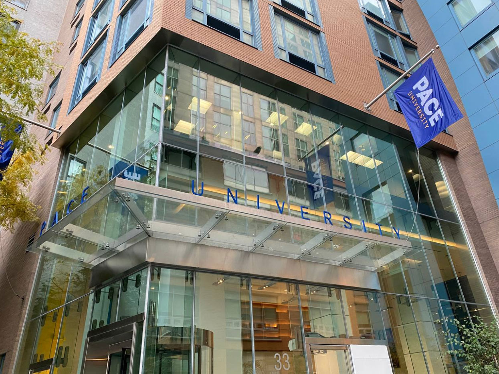
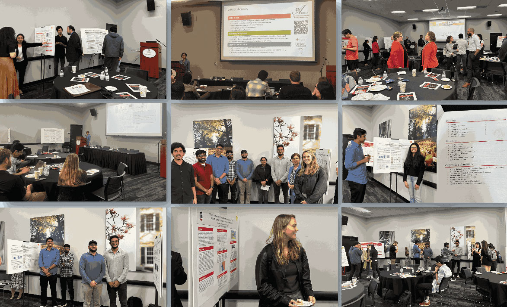
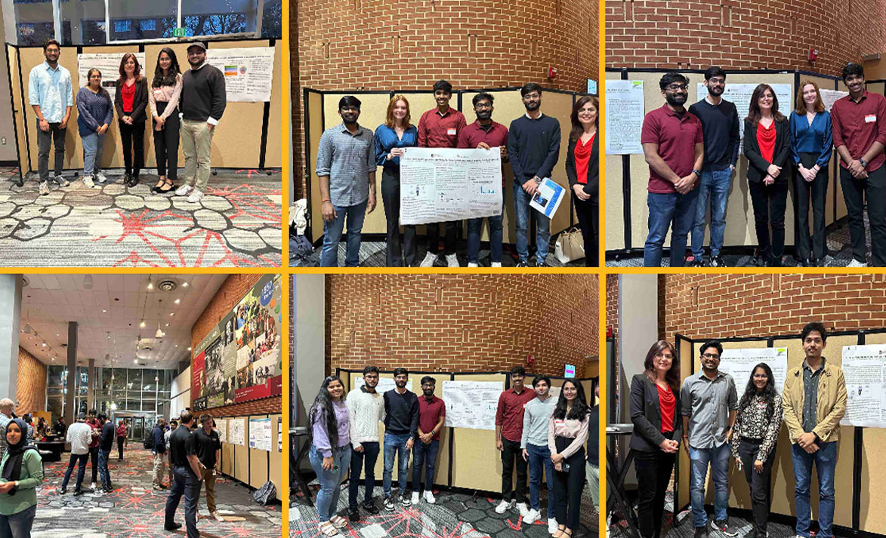
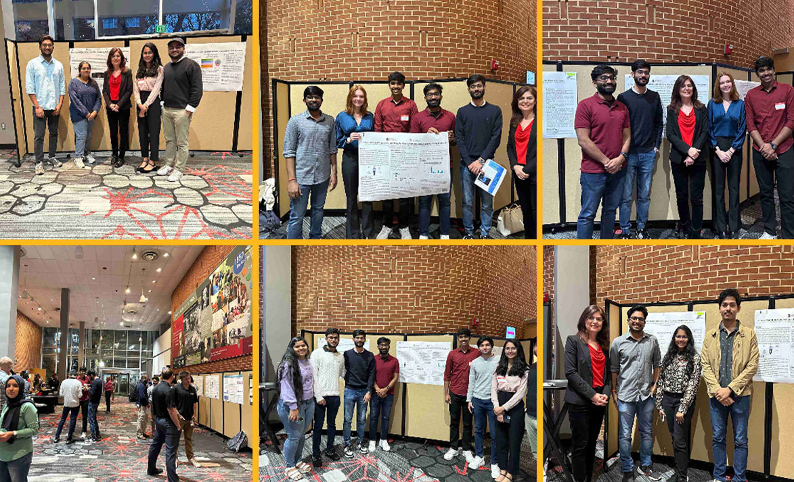

People

Academic Advisory Board
- Li-Chiou Chen, PhD, Pace University.
- Hamid R. Arabnia, PhD, University of Georgia.
- Khaled Rasheed, PhD, University of Georgia.
- Ahmad P. Tafti, PhD, FAMIA, University of Pittsburgh.
- Kurt R. Weiss, MD, University of Pittsburgh.
- Johannes F. Plate, MD, PhD, University of Pittsburgh.
Main Extramural Collaborators
- Hilal Maradit Kremers, MD, Mayo Clinic.
- Hongfang Liu, PhD, the University of Texas Health Science Center at Houston.
External Laboratories
RAI and Ukrainian Project
- Vladyslav Protsenko, Graduate student, Ukrainian Catholic University, Fall 24
- Rohan Swapneel Intipalli, Undergraduate student, Ukrainian Catholic University, Fall 24
- Yaroslav Klym, Undergraduate student, Ukrainian Catholic University, Fall 24
Graduate Research Assistants
UGA Graduate Research Assistants: Click to view UGA Graduate Research Assistants- Pavan Bodanki, Graduate student, Fall 23, Spring, and Summer 24
- Rohan Swapneel Intipalli, Graduate student, Fall 23, Spring 24
- Vedraj Sachin Chavan, Graduate student, Fall 23, Spring 24
- Vaishnavi Ganjikunta, Graduate student, Fall 23, Spring 24
- Aditya U. Patel, Graduate student, Fall 23, Spring 24
- Lakshmi Meghana Bojja, Graduate student, Fall 23, Spring 24
- Venkata Sivasai Ramachandra Punith Kandula, Graduate student, Fall 23, Spring 24
- Manoj Tumkur Shivashankar, Graduate student, Fall 23, Spring 24
- Boby John Loganathan, Graduate student, Fall 23, Spring 24
- Nikhita Mallappa Biradar, Graduate student, Fall 23, Spring 24
- Ashutosh Kekre, Graduate student, Fall 23, Spring 24



Undergraduate Research Assistants
- Kseniya Liavitskaya , Fall 24
- Mary Margaret Gleason, Spring 24
- James Laurence Rivera, Spring 24
- Tharushika Dp Maryan Dehipitiarachchi, Fall 23, Spring 24
- Dias Mashikov, Fall 23
- Bryce N. Wellman, Fall 23
- Catherine Kimbrell Goldman, Summer and Fall 23
- Sean Nicolas Payne, Summer 23
- Robin Grazulis, Spring 23
Teaching Assistants
- Arpit Shah, Graduate student, Fall 24
- Qingchen Kong, Graduate student, Summer 24
- Sandeep Reddy Guthireddy, Graduate student, Spring 24
- Wei Liang, Undergraduate student, Spring 24
- Maggie Opsahl, Undergraduate student, Spring 24
- Nima Darbandi, Graduate student (recipient of the Teaching Assistant Award in Spring 2024!), Fall 23
- Rohan Swapneel Intipalli, Graduate student (recipient of the Teaching Assistant Award in Spring 2024!), Fall 23
- Abdulrahman Ahmed Gharawi, Graduate student, Spring 23, 24
- Kishan Kalaria, Undergraduate student, Fall 23
- Anna Hu, Undergraduate student, Spring and Fall 23
- Afsaneh Shams, Graduate student (recipient of the Teaching Assistant Award in Spring 2023!), Spring and Fall 23
- Sakher Khalil Alqaaidi, Graduate student, Summer 23
- Ehsan Asali, Graduate student, Summer 23
- Zainab Adeola Agboola, Graduate student, Spring 23
- Yousef Fekri, Graduate student, Spring and Summer 23
- Benjamin Abel Goodwin, Undergraduate student, Spring and Summer 23
- Zhengliang Liu, Graduate student, Spring 23
- Manas Mishra, Graduate student, Spring 23
- Sarayu Ramachandra, Undergraduate student, Summer 23
- Matthew Sand, Undergraduate student, Spring 23